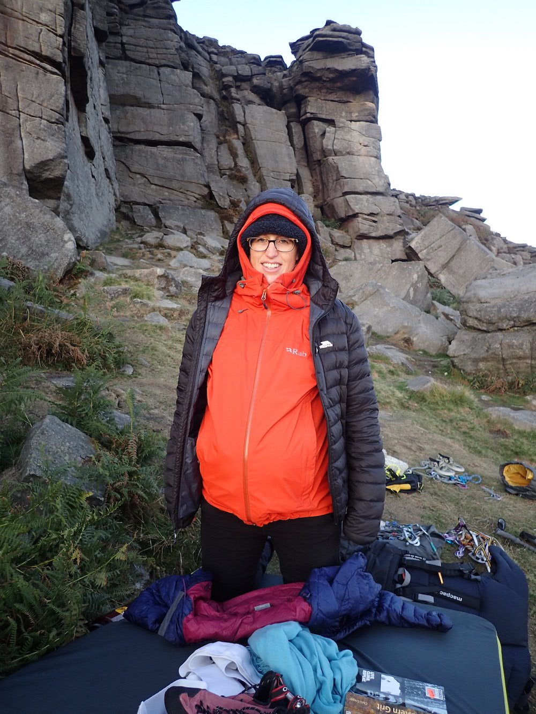
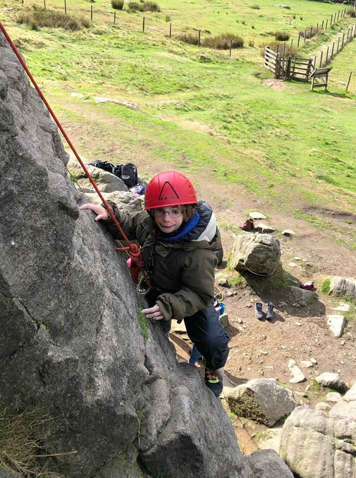

Outdoor Trips
Take a look at our links below to find out about our trips climbing outdoors! More will be added as they happen!


Take a look at our links below to find out about our trips climbing outdoors! More will be added as they happen!